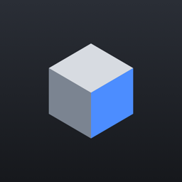

找不到答案？來信 socky.lee@gmail.com，請附上裝置型號、系統版本與 App 版本（設定 → 關於 → 版本）。
首頁點「＋」選擇範本或空白專案，在工作區點「草圖」選一個平面，畫出輪廓後按「完成」，再用「擠出」做成立體。iPad 可用 Apple Pencil 手繪，形狀會自動辨識成直線、圓與矩形。
會。Solidraft 是參數式建模，每個特徵都依序記錄；修改草圖尺寸後，整個模型會從那一步重新計算。
通常是圓角半徑或薄殼厚度比相鄰的面還大。把數值調小，或改選其他邊、面再試一次。失敗的特徵之後的步驟會暫時略過，模型停在前一步。
STL、OBJ、3MF；Solidraft Pro 另可匯入與匯出 STEP，和其他 CAD 交換檔案。匯出畫面可選擇印表機的平台尺寸，並檢查模型是否放得下、是否置中。
預估用料以模型體積乘上材料密度（PLA 1.24、PETG 1.27、ABS 1.04 g/cm³），並以實心計算，是用量的上限。實際用量依切片軟體的填充率與外牆設定而定。
訂閱 Solidraft Pro 後，在「設定 → iCloud 同步」開啟。每台裝置都要登入同一個 Apple 帳號，並在系統設定中開啟 iCloud 雲碟。
兩台裝置在同步前都改了同一個專案時會出現。開啟專案時可選擇保留這台、保留另一台，或兩份都保留（另一台的會另存一份）。
到「設定 → 方案」按「恢復購買」。請確認使用的是購買時的 Apple 帳號。
在裝置的「設定 → Apple 帳號 → 訂閱」，或 App 內「設定 → 方案 → 管理訂閱」。取消後可使用到目前期間結束，專案不會被刪除。